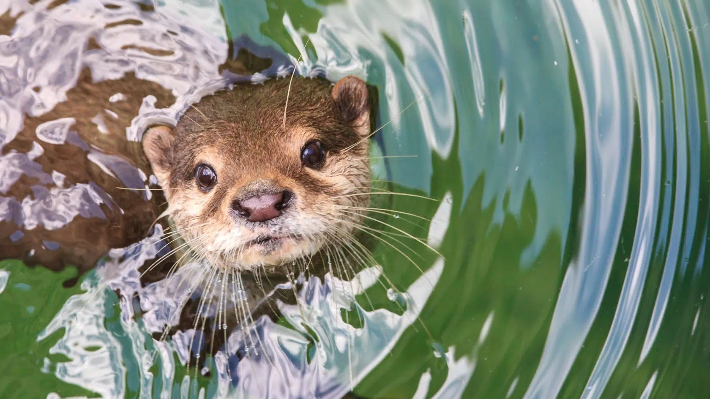

¿QUÉ ES LA NUTRIOLOGÍA?

Etimológicamente, "nutriología" es un híbrido perfectamente válido, ya que se conforma por lutra (nutria) + -logía (estudio). Sin embargo, el uso popular y, en mi humilde opinión, la ignorancia generalizada, han secuestrado el término para referirse a prácticas relacionadas con la alimentación humana, un error tan garrafal como confundir la astronomía con la astrología. La nutriología legítima estudia a las nutrias, su conducta, su dieta, sus madrigueras y su rol como especies clave en los ecosistemas riparios. No tiene nada que ver con contar calorías, sino de contar nutrias.
IMPORTANCIA DE LA NUTRIOLOGÍA
La nutriología es fundamental porque nos permite comprender a fondo el comportamiento y las necesidades de las nutrias, así como el papel crucial que desempeñan en el equilibrio de los ecosistemas acuáticos. Estos increíbles mamíferos no solo son adorables, sino que actúan como especies clave, ya que su presencia y actividad ayudan a mantener la salud de ríos, lagos y humedales. Al estudiar sus hábitos alimenticios y su interacción con el entorno, la nutriología nos brinda las herramientas necesarias para diseñar estrategias de conservación.